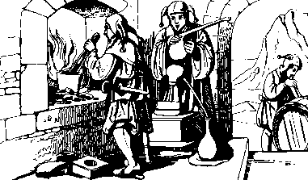
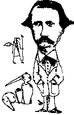

'alchimie, héritière des spéculations chinoises et arabes, était au Moyen-Age le savoir par excellence, synthèse des principes de toutes les autres sciences. Ayant pour objet l'étude de la vie, elle cherchait à découvrir un agent capable de retarder indéfiniment la mort et de donner aux êtres l'accès à un état supérieur. C'était d'une part l'élixir de longue vie ou la panacée propre à guérir tous les maux et d'autre part la pierre philosophale, ou pierre des sages, capable de transmuer en or les métaux vils, départ de la restauration de l'homme dans son originelle ressemblance divine. L'alchimie était une science « sacrée » ; la chimie des temps modernes est une alchimie désacralisée.

arcellin Berthelot s'est toujours passionné pour l'histoire de la chimie et c'est ainsi qu'il publia un grand nombre de mémoires et d'ouvrages toujours d'actualité dans lesquels il rapporta le résultat de ses études et les traductions et commentaires qu'il a réalisés sur des papyrus et des manuscrits anciens répartis dans les plus grandes bibliothèques d'Europe (Paris, Cambridge, Leyde, etc.) et dans des collections particulières.
e site vous propose une biographie de ce brillant chimiste français ainsi qu'une présentation de trois de ses principaux ouvrages historiques qui sont devenus des œuvres de référence : Livre I. Les origines de l'alchimie (1885), Livre II. Introduction à l'étude de la chimie des Anciens et du Moyen-Age (1889) et Livre III. La chimie au Moyen-Age (1893).


Accueil · Biographie · Livre I · Livre II · Livre III